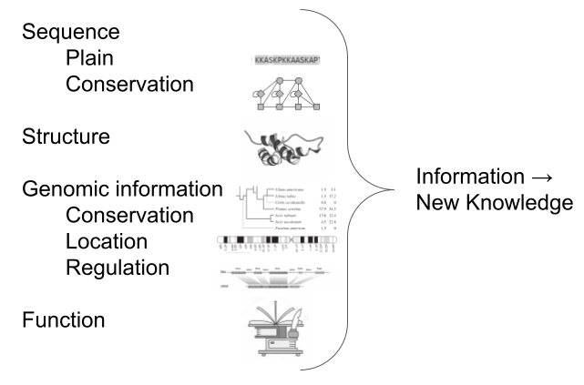

Bioinformatics Data Types and Databases
Contributors
| Author(s) |
|
Questions
What are some of the main resources to explore bioinformatics information?
How is this information represented in file formats?
What type of information do these file formats convey?
Objectives
Understand that the biological data is multi-layered
Identify multiple sources of information in biology
Describe how this different types of information are conveyed through different file formats
Background
- Need: digitally store biological data
- All biological data could be (and initially was) included in simple text files
- Yet, significant limitations:
- Not structured, hence not programmatically accessible
- Impossible to distinguish data (e.g. gene sequence) from metadata (e.g. annotations about location, quality, function, etc.)
Speaker Notes
In this presentation, we’ll look into the history of biological data. Initially, all type of data was approached using simple text files, but this quickly became limiting. Indeed, unstructured text files are not programmatically accessible and in such files it is impossible to distinguish data from metadata. It’s important to understand these limitations as they set the stage for the development of more advanced storage methods.
Different information in different file formats
- In the years, different file formats have been developed to store different types of data with the relevant metadata fields
- E.g. for a biological sequence
- From the simplest, text-like file (FASTA)
- To more complex formats which include genomic features and quality annotation
- Different file formats not only to represent different levels of complexity but also different types of information
- E.g. about a protein
- From a text-like file to store the sequence (FASTA)
- To a tabular file to store the exact coordinates of each atom in the structure, hence comvey the 3D arrangement
Speaker Notes
As time progressed, the need for more structured and accessible data storage became apparent. Various file formats were developed to accommodate different types of biological data. We’ll explore some of these formats, ranging from simple text-like files for storing sequences to more complex ones that include annotations, 3D structures, and genomic features.
Different information in different databases
- Consequently, different resources evolved not only to store, but also represent/visualise this varied information
- These resources often have a database storing data and a web interface that allows to navigate it
- They usually represent different levels of complexity of one specific type of biological entity
- E.g. A database of protein sequences and their annotation (sequence variability, genomic location, effect of mutations, etc.)
- E.g. A database of protein structures and their annotation (3D coordinates, flexibility, methods used to resolve the structure, etc.)
Speaker Notes
In parallel, different biological resources emerged, each designed to handle specific types of data and complexity. These resources often consist of databases with associated web interfaces, enabling users to navigate and visualize the data effectively.
Definition of a biological database/resources
- The NAR Database Issue collects publications of established databases in the field
- Collection of data (and metadata) in the related format
- structured
- searchable (indexed)
- updated periodically
- entries mapped to unique identifiers, and cross-referenced
- Includes associated software necessary for DB access, update, search, visualisation (web)
Speaker Notes
Biological databases play a crucial role in housing and organizing biological data. The NAR Database Issue collects publications about established databases in the field. Requirements to be featured in this issues are to have a structured nature, searchability, regular updates, and cross-referencing capabilities. These databases also offer software tools for accessing, updating, and visualizing the data they contain.
Some history
.pull-left[
- 1953: 3D structure of DNA (Watson, Crick, Franklin, Wilkins)
- 1956: first protein sequence, insulin (51 AA)
- 1965: first whole nucleic acid sequence, tRNA from yeast
- 1966: Atlas of protein sequences and structures, by Margaret Dayhoff, printed book
- 1972: first complete protein-coding gene, coat protein from a bacteriophage
- 1976: same Lab, its complete genome
- 1971: Protein Data Bank (PDB)
- 1980-87: the European Molecular Biology Laboratory (EMBL) Nucleotide Sequence Database; GenBank from the National Center for Biotechnology Information (NCBI); and the DNA Databank of Japan (DDJ)
- 1986: SwissProt was created by Rolf Apweiler ]
.pull-right[
 ]
]
Speaker Notes
The source of information for this slide, which includes a short early history of biological data formats and databases evolution, is the paper: https://www.ncbi.nlm.nih.gov/pmc/articles/PMC4727787/ Understanding the historical context of biological data storage helps us appreciate the progress made in the field.
- 1953: Watson and Crick famously solved the three-dimensional structure of DNA in 1953, working from crystallographic data produced by Rosalind Franklin and Maurice Wilkins
- 1956: Fred Sanger obtained the first protein sequence, of insulin (51 AA)
- 1965: Robert Holley and colleagues were able to produce the first whole nucleic acid sequence, that of alanine tRNA from Saccharomyces cerevisiae
- 1966: Atlas of protein sequences and structures, by Margaret Dayhoff, a printed book including multiple
This book is a compilation of known protein sequences. The major ones listed are for cytochrome C and for hemoglobin alpha and beta chains.
- 1972: Walter Fiers’ laboratory was able to produce the first complete protein-coding gene sequence in 1972, that of the coat protein of bacteriophage MS2
- 1976: same Lab, its complete genome
- 1971: Protein Data Bank (PDB)
- 1980-87: the European Molecular Biology Laboratory (EMBL) Nucleotide Sequence Database; GenBank from the National Center for Biotechnology Information (NCBI); and the DNA Databank of Japan (DDJ)
- 1986: SwissProt was created by Rolf Apweiler
Examples of biological databases
- SwissProt + TrEMBL = UniProtKB
- PDB
- GenBank
Speaker Notes
Prominent biological databases that have significantly contributed to our understanding of biological entities are for example UniProtKB, PDB, and GenBank. We will discuss their importance and the types of data they store.
UniProtKB
.pull-left[
- Swiss-Prot: Manually curated / annotated Sequence Database
- TrEMBL: Database of EMBL nucleotide translated sequences, automatically annotated
The two databases are merged into the UniProt Knowledge Base, including information of different types about proteins. ]
.pull-right[ ]
Speaker Notes
UniProtKB is a comprehensive resource that brings together data from both Swiss-Prot and TrEMBL databases. We’ll explore how these databases are merged to create a unified knowledge base about proteins, encompassing a wide array of information.
PDB
.pull-left[ Protein Data Bank (PDB) archive of 3D structure data for biological molecules (proteins, DNA, RNA).
Currently includes > 1TB of structure data, archived world-wide. ]
.pull-right[
 ]
]
Speaker Notes
The Protein Data Bank, or PDB, is a vital repository for 3D structure data of biological molecules. We’ll delve into the significance of PDB, its role in advancing structural biology, and the substantial volume of data it currently archives.
GenBank
.pull-left[ An annotated collection of all publicly available DNA sequences, which comprises the DNA DataBank of Japan (DDBJ), the European Nucleotide Archive (ENA), and GenBank at NCBI ]
.pull-right[
 ]
]
Speaker Notes
GenBank stands as a critical resource for DNA sequences. It collaborates with other databases, such as DDBJ and ENA, to provide a comprehensive collection of publicly available DNA sequences.
Biological knowledge
.pull-left[ Understanding about biological entities comes from crossing the information from/to these different resources and formats ]
.pull-right[  ]
Speaker Notes
An intricate web of information exists around biological entities, and understanding them involves merging insights from various resources. A big part of some bioinformaticians’ job is to integrate information from different databases and formats to gain a holistic understanding of biological entities.
Features of biological databases
- Data heterogeneity
- High volume of data
- Large scale data integration
- Data sharing / user visualisation and navigation
- Uncertainty / data quality measure needed
- Dynamic and subject to change
Speaker Notes
Biological databases are characterized by a range of features that reflect the complexity of biological data. Biological databases face the challenges of handling data heterogeneity, ensuring data quality, and accommodating the dynamic nature of biological information.
Possible classifications of biological databases
.pull-left[
- Data type
- Data access
- Data source
- … ]
–
.pull-right[ Data type
- Genome database
- Sequence database
- Structure database
- Pathway database
- Disease database
- … ]
Speaker Notes
Classifying biological databases helps us categorize and understand their diverse nature. There might be various ways of classifying databases, such as by data type, data access, and data source.
The world of biological data is rich with different file formats designed to accommodate diverse types of information, including those for sequences, alignments, features/annotations, and protein structures.
Possible classifications of biological databases
.pull-left[
- Data type
- Data access
- Data source
- … ]
.pull-right[ Data access
- Publicly available (browsing, downloading)
- Freely accessible and reusable under a license
- License open to certain usages (e.g. academic)
- Proprietary / commercial
- Restricted to certain people / institutions
- … ]
Speaker Notes
Possible classifications of biological databases
.pull-left[
- Data type
- Data access
- Data source
- … ]
.pull-right[ Data source
- Primary databases (GenBank, PDB)
- Secondary databases: analysed/aggregated results of the primary ones (UniProtKB)
- Composite database: non-redundant / filtered data (SwissProt)
- … ]
Biological file formats
- Sequence formats
- Alignment formats
- Features/annotations formats
- Structure formats
Speaker Notes
In the following tutorials, we’ll explore some of the most commonly used biological file formats in detail. We’ll provide examples and explanations for each format, helping you understand how they store and represent different types of biological data.
Sequence formats
FASTA
File extensions: file.fa, file.fasta, file.fsa
Example:
>XR_002086427.1 Candida albicans SC5314 uncharacterized ncRNA (SCR1), ncRNA
TGGCTGTGATGGCTTTTAGCGGAAGCGCGCTGTTCGCGTACCTGCTGTTTGTTGAAAATTTAAGAGCAAAGTGTCCGGCTCGATCCCTGCGAATTGAATTCTGAACGCTAGAGTAATCAGTGTCTTTCAAGTTCTGGTAATGTTTAGCATAACCACTGGAGGGAAGCAATTCAGCACAGTAATGCTAATCGTGGTGGAGGCGAATCCGGATGGCACCTTGTTTGTTGATAAATAGTGCGGTATCTAGTGTTGCAACTCTATTTTT
Speaker Notes
Fasta format is a simple way of representing nucleotide or amino acid sequences of nucleic acids and proteins. This is a very basic format with two minimum lines. First line referred as comment line starts with ‘>’ and gives basic information about sequence. There is no set format for comment line. Any other line that starts with ‘;’ will be ignored. Lines with ‘;’ are not a common feature of fasta files. After comment line, sequence of nucleic acid or protein is included in standard one letter code. Any tabulators, spaces, asterisks etc in sequence will be ignored.
Sequence formats
FASTQ
File extensions: ile.fastq, file.sanfastq, file.fq
Example:
@K00188:208:HFLNGBBXX:3:1101:1428:1508 2:N:0:CTTGTA
ATAATAGGATCCCTTTTCCTGGAGCTGCCTTTAGGTAATGTAGTATCTNATNGACTGNCNCCANANGGCTAAAGT
+
AAAFFJJJJJJJJJJJJJJJJJFJJFJJJJJFJJJJJJJJJJJJJJJJ#FJ#JJJJF#F#FJJ#F#JJJFJJJJJ
Speaker Notes
Fastq format was developed by Sanger institute in order to group together sequence and its quality scores (Q: phred quality score). In fastq files each entry is associated with 4 lines.
- Line 1 begins with a ‘@‘ character and is a sequence identifier and an optional description.
- Line 2 Sequence in standard one letter code.
- Line 3 begins with a ‘+‘ character and is optionally followed by the same sequence identifier (and any additional description) again.
- Line 4 encodes the quality values for the sequence in Line 2, and must contain the same number of symbols as letters in the sequence.
Alignment formats
SAM (Sequence Alignment Map)
File extensions: file.sam
Example:
1:497:R:-272+13M17D24M 113 1 497 37 37M 15 100338662 0 CGGGTCTGACCTGAGGAGAACTGTGCTCCGCCTTCAG 0;==-==9;>>>>>=>>>>>>>>>>>=>>>>>>>>>> XT:A:U NM:i:0 SM:i:37 AM:i:0 X0:i:1 X1:i:0 XM:i:0 XO:i:0 XG:i:0 MD:Z:37
19:20389:F:275+18M2D19M 99 1 17644 0 37M = 17919 314 TATGACTGCTAATAATACCTACACATGTTAGAACCAT >>>>>>>>>>>>>>>>>>>><<>>><<>>4::>>:<9 RG:Z:UM0098:1 XT:A:R NM:i:0 SM:i:0 AM:i:0 X0:i:4 X1:i:0 XM:i:0 XO:i:0 XG:i:0 MD:Z:37
19:20389:F:275+18M2D19M 147 1 17919 0 18M2D19M = 17644 -314 GTAGTACCAACTGTAAGTCCTTATCTTCATACTTTGT ;44999;499<8<8<<<8<<><<<<><7<;<<<>><< XT:A:R NM:i:2 SM:i:0 AM:i:0 X0:i:4 X1:i:0 XM:i:0 XO:i:1 XG:i:2 MD:Z:18^CA19
9:21597+10M2I25M:R:-209 83 1 21678 0 8M2I27M = 21469 -244 CACCACATCACATATACCAAGCCTGGCTGTGTCTTCT <;9<<5><<<<><<<>><<><>><9>><>>>9>>><> XT:A:R NM:i:2 SM:i:0 AM:i:0 X0:i:5 X1:i:0 XM:i:0 XO:i:1 XG:i:2 MD:Z:35
Speaker Notes
The SAM Format is a text format for storing sequence data in a series of tab delimited ASCII columns. Most often it is generated as a human readable version of its sister BAM format, which stores the same data in a compressed, indexed, binary form.
SAM format files are generated following mapping of the reads to reference sequence. It is TAB-delimited text format with header and a body. Header lines start with ‘@’ while alignment lines do not. Header hold generic information on SAM file along with version information, if the file is sorted, information on reference sequence, etc. The alignment records constitute the body of the file. Each alignment line/record has 11 mandatory fields describing essential alignment information.
Alignment formats
BAM (Binary Alignment/Map)
File extensions: file.bam
A BAM file is the compressed binary version of the Sequence Alignment/Map (SAM).
Speaker Notes
a compact and indexable representation of nucleotide sequence alignments. The data between SAM and BAM is exactly same. Being Binary BAM files are small in size and ideal to store alignment files. Require samtools to view the file.
Features/annotations formats
VCF (Variant Calling Format/File)
File extensions: file.vcf
Example:
##fileformat=VCFv4.2
##fileDate=20090805
##source=myImputationProgramV3.1
##reference=file:///seq/references/1000GenomesPilot-NCBI36.fasta
##contig=<ID=20,length=62435964,assembly=B36,md5=f126cdf8a6e0c7f379d618ff66beb2da,species="Homo sapiens",taxonomy=x>
##phasing=partial
##INFO=<ID=NS,Number=1,Type=Integer,Description="Number of Samples With Data">
##INFO=<ID=DP,Number=1,Type=Integer,Description="Total Depth">
##INFO=<ID=AF,Number=A,Type=Float,Description="Allele Frequency">
...
20 14370 rs6054257 G A 29 PASS NS=3;DP=14;AF=0.5;DB;H2 GT:GQ:DP:HQ 0|0:48:1:51,51 1|0:48:8:51,51 1/1:43:5:.,.
20 17330 . T A 3 q10 NS=3;DP=11;AF=0.017 GT:GQ:DP:HQ 0|0:49:3:58,50 0|1:3:5:65,3 0/0:41:3
20 1110696 rs6040355 A G,T 67 PASS NS=2;DP=10;AF=0.333,0.667;AA=T;DB GT:GQ:DP:HQ 1|2:21:6:23,27 2|1:2:0:18,2 2/2:35:4
20 1230237 . T . 47 PASS NS=3;DP=13;AA=T GT:GQ:DP:HQ 0|0:54:7:56,60 0|0:48:4:51,51 0/0:61:2
20 1234567 microsat1 GTC G,GTCT 50 PASS NS=3;DP=9;AA=G GT:GQ:DP 0/1:35:4 0/2:17:2 1/1:40:3
Speaker Notes
VCF is a text file format with a header (information VCF version, sample etc) and data lines constitute the body of file.
Features/annotations formats
GFF (General Feature Format or Gene Finding Format)
File extensions: file.gff2, file. gff3, file.gff
Example (GFF2):
browser position chr22:10000000-10025000
browser hide all
track name=regulatory description="TeleGene(tm) Regulatory Regions"
visibility=2
chr22 TeleGene enhancer 10000000 10001000 500 + . touch1
chr22 TeleGene promoter 10010000 10010100 900 + . touch1
chr22 TeleGene promoter 10020000 10025000 800 - . touch2
Speaker Notes
GFF (General Feature Format or Gene Finding Format). GFF can be used for any kind of feature (Transcripts, exon, intron, promoter, 3’ UTR, repeatitive elements etc) associated with the sequence, whereas GTF is primarily for genes/transcripts. GFF3 is the latest version and an improvement over GFF2 format. However, many databases are still not equipped to handle GFF3 version. The differences will be explained later in text.
The GFF format has 9 mandatory columns and they are TAB separated.
- Col. 1 Reference Sequence
- Col. 2 Source
- Col. 3 Feature
- Col. 4 Start
- Col. 5 End
- Col. 6 Score
- Col. 7 Strand
- Col. 8 Frame (GFF2 and GTF) or Phase (GFF3)
- Col. 9 Attribute or Group field
Features/annotations formats
BED (Browser Extensible Data)
The BED (Browser Extensible Data) file format includes information about sequences that can be visualized in a genome browser; a feature called an annotation track. BED files are tabs-delimited and include 12 fields (columns) of data.
Example of fields: name of chromosome or scaffold, starting position in the chromosome, the ending position…
Features/annotations formats
PSI-MI
The PSI MI format is a data exchange format for molecular interactions.
Example of fields: interaction detection method, biological role, experimental features, location of the interaction, …
Features/annotations formats
PED
File extensions: file.ped
PED is a file format for pedigree analysis, which creates a familial relationship between different samples.
Structure formats
PDB (Protein Data Bank formats)
File extensions: file.pdb
PDB file formats contain atomic coordinates and are used for storing 3D protein structures by the Protein Data Bank.
Example:
COMPND UNNAMED
AUTHOR GENERATED BY OPEN BABEL 2.3.2
ATOM 1 N ALA A 1 0.000 0.000 0.000 1.00 0.00 N
ATOM 2 CA ALA A 1 1.456 0.000 0.000 1.00 0.00 C
ATOM 3 C ALA A 1 1.930 0.000 1.463 1.00 0.00 C
ATOM 4 O ALA A 1 1.160 0.000 2.421 1.00 0.00 O
...
CONECT 101 98
CONECT 102 94 103
CONECT 103 102
MASTER 0 0 0 0 0 0 0 0 103 0 103 0
END
Other formats
CSV
CSV (.csv file format) files stands for comma separated value and is a text file, where each line is a row and columns are delimited with a comma. It can store different types of sequencing data and can be opened using common spreadsheet programs.
JSON
JSON (JavaScript Object Notation) is a common file format for many other industries, but is used in a growing number of bioinformatics applications and web resources.
And the list of generic file formats goes on…
Why Are There So Many Different Types?
The many different ways of generating and using biological data have given rise to the diversity previously described. These file formats have their own specific use cases depending on:
- Compatibility with specific software
- Data processing, parsing, and human readability needs
- Efficiency for storage
Speaker Notes
In conclusion, the multitude of biological file formats arises from the diverse needs and characteristics of biological data.
Key Points
- Biological data is multi-layered. E.g. the information about one gene can actually regard multiple different biological entities: the variability of its sequence, the derived protein, the diseases associated etc.
- Consequently, several different sources of information can be identified and used to describe a biological entity, as well as several different file formats.
Thank you!
This material is the result of a collaborative work. Thanks to the Galaxy Training Network and all the contributors!Funding
These individuals or organisations provided funding support for the development of this resource